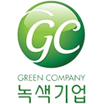

환경경영
술 빚는 정성과 자연이 어우러진 국순당
Environment
좋은 술은 좋은 자연이 빚기에,
재료들이 더 깨끗하게 자라날 수 있도록
국순당은 전통주 업계 최초로 환경부에서 지정한 녹색기업으로 선정되면서 국내 최고의 로하스 주류기업으로 자리매김하고 있습니다.
주향로
수질 관리기준 및 배출농도
| 구분 | 부유물질 (SS) |
수질 | 총 질소 (T-N) |
총 인 (T-P) |
|---|---|---|---|---|
| 배출규제 기준 |
40 | 6급수 이하 | 30 | 4 |
| 당사관리 기준 |
5 | 2급수 | 15 | 2 |
3단계 고도처리공정 외에도 유입되는 원수에 대한 실시간 오염농도 자동분석시스템(COD 자동분석기)을 설치 운영하고 있으며, 만약의 사고에 대비해 비상조 및 2단계 중간처리 수조 등도 갖추고 있습니다. 또한 모든 처리수는 물고기가 서식하는 생태연못을 통해 방류함으로써 단 한 순간이라도 환경사고가 발생되지 않도록 감시, 운영하고 있습니다.